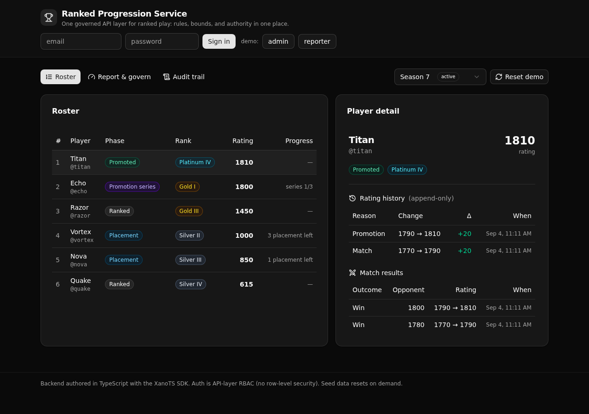

A governed ranked-play backend. The progression state machine, the rating math and its bounds, and the admin-only authority all live in one readable API layer.

A studio backend engineer replaces ranking logic scattered across game servers with one service a reviewer can read and trust. Control is the point, not speed.
placement to ranked, a promotion series that resolves to promoted or falls back, and a bottom-boundary demotion. Terminal phases refuse a further result.
An Elo-style step, capped per match, clamped so it never goes below zero. The math sits in one lambda next to the explicit guards.
API-layer RBAC. A reporter reports a match. Only an admin overrides a rating or moves a season. The role is read from the row, not claimed by the client. No row-level security.
Every endpoint is under /api:ranked/.
| Endpoint | What it enforces |
|---|---|
POST /seed | Resets and loads the demo. Public, so a fresh deploy is browsable. |
POST /login | Verifies a staff credential and mints a token carrying the role. |
GET /players | The roster for a season: each player's phase, tier, and rating. |
GET /rank/{player_id} | One player's standing plus their append-only history and matches. |
POST /report | Recomputes rating within bounds, drives the transition, refuses a terminal phase or a non-active season. |
POST /advance · /close | Season lifecycle. Refuses an illegal move. Admin only, audited. |
POST /override | The one sanctioned bypass. Re-derives the rank, records the change. Admin only. |
GET /audit | The append-only trail of every governed action. Admin only. |
React and Vite, styled with shadcn/ui. It reads paths and types straight from the backend defs (the one contract), so a change to an endpoint flows into the UI.
Paste this to a coding agent to stand it up on your own Xano instance, then adapt the state machine and rating engine to your domain.
Clone the XanoTS template at
https://github.com/xano-scratch/ranked-progression-service
Run: npm install, then npx xanots login, then npm run xano:deploy
It prints a live URL and loads demo data on first visit.
Then help me adapt the ranked_states state machine and the rating
engine in xano/api/report.ts to my own domain and rules.npm run xano:deploy.